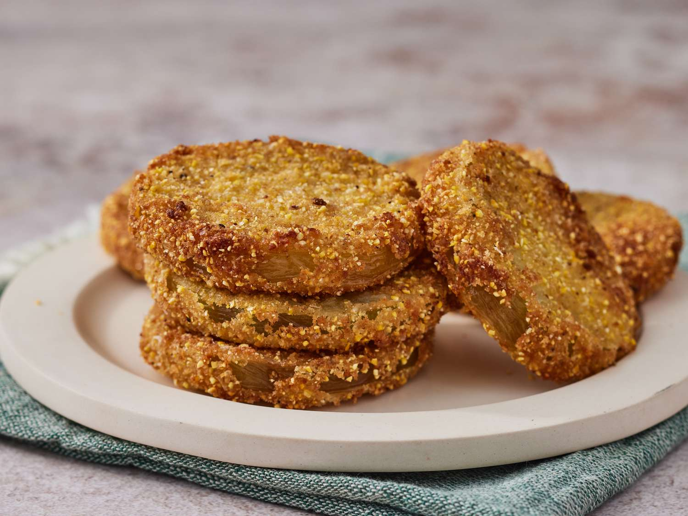

Fried green tomatoes are a staple of Southern United States. The dish is made with firm, unripe, and tangy green tomatoes that are sliced, dipped in seasoned cornmeal, then deep-fried. Ideally, the tomatoes should have a crunchy crust and a succulent interior after the deep-frying.
Meal prep time : 20 minutes
Servings : 4